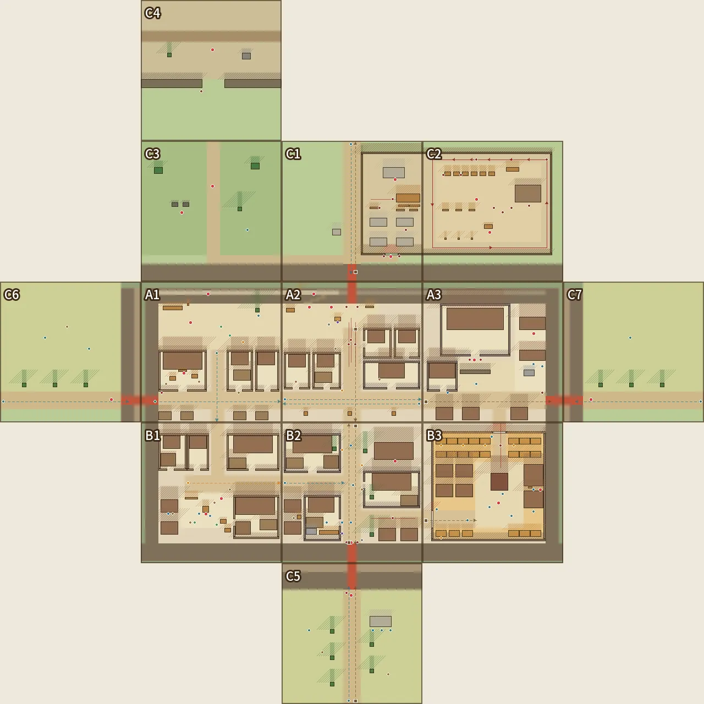
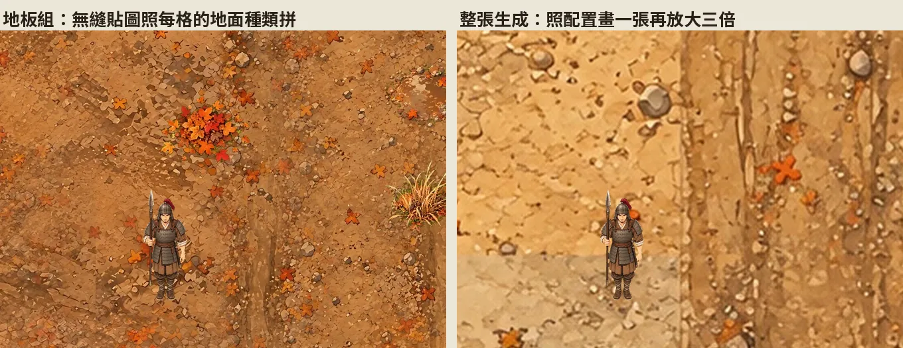
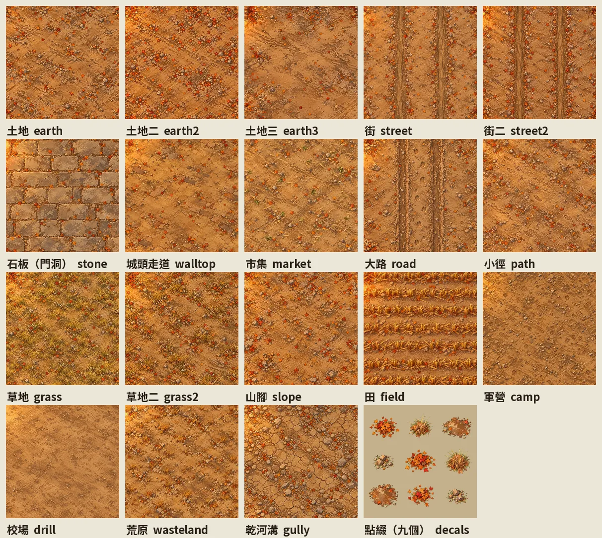
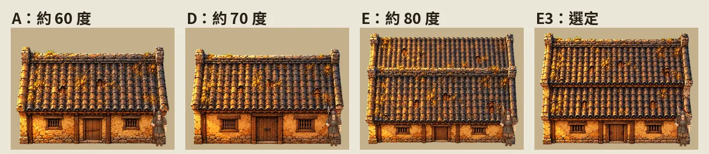
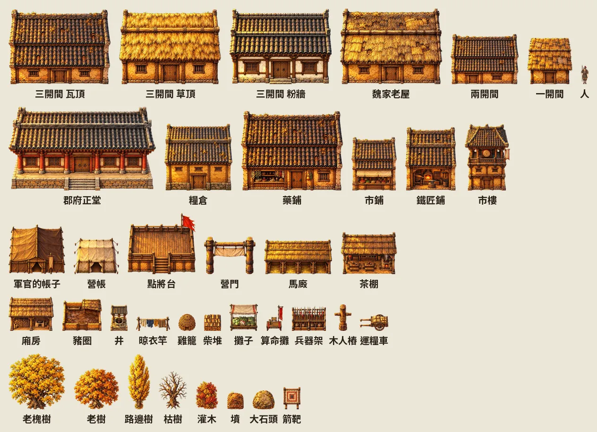
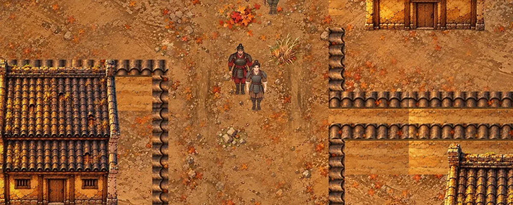
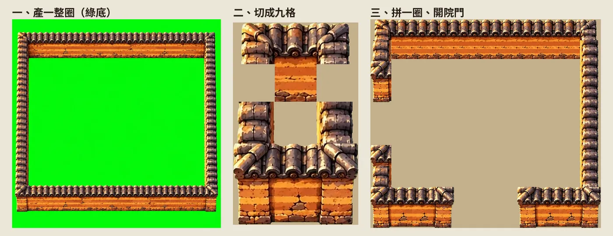
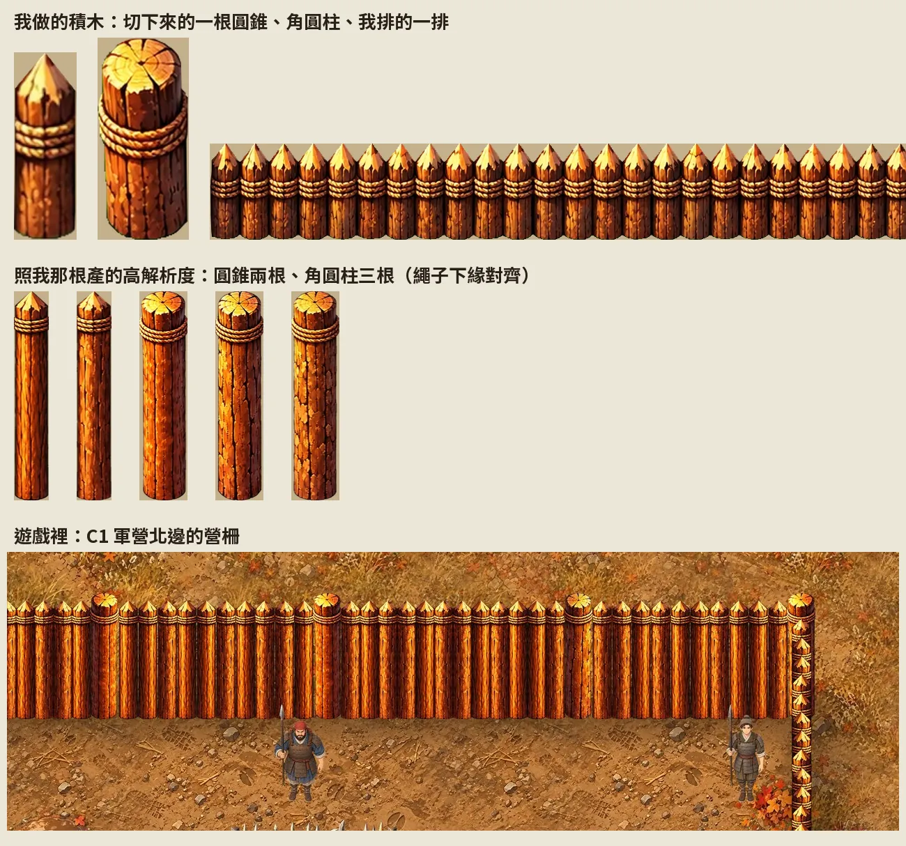
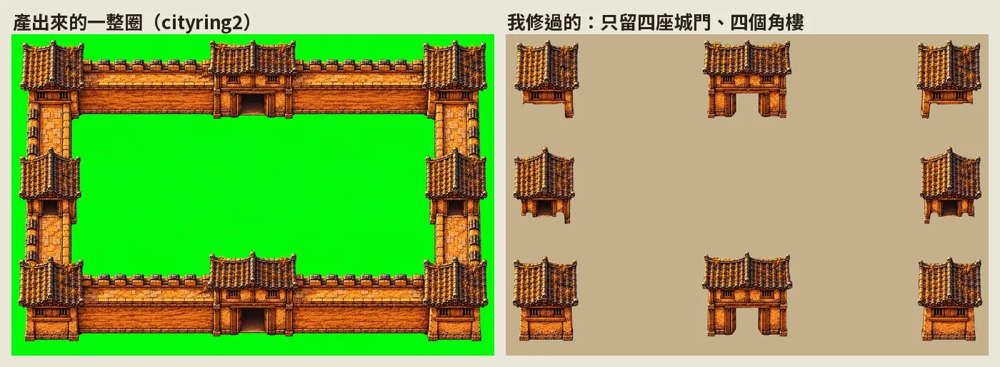
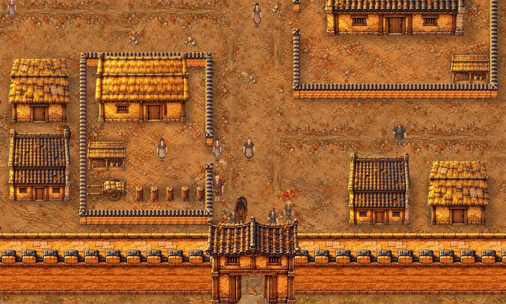

建城工法：拼出來的城
五原是《續》地圖重做的第一座城。第一套做法是把一座城拆成零件，一件一件產，再照一份配置拼回去：地面用無縫貼圖拼，屋子在綠幕上一棟一棟產，牆整圈產再切成九格，城牆連城門、角樓一起產。這一章記下每一步的做法、指令和數字，我定過的規矩，還有試過就丟掉的做法。
底稿是 xu/建城工法.md，給我看的網頁版存檔在建城工法。我離開前交代 AI 把素材和工法做完，整理成之後建城、建村的依據，不用每座城再試一次。這套後來大半被走進原畫取代，但配置、城牆、牆段、路人和擋路到現在還在用，最後一節講哪些留了下來。
一張地圖最大 64 格，城要拆成好幾塊
舊版《續》最大的一張五原是 56×40 格。一格半公尺，實際只有 28×20 公尺，看起來像只有幾戶的小村。漢代縣城一面城牆常有幾百公尺到一公里，照實際比例畫，一面牆就要上千格。
Larch 一張地圖最大 64×64 格。AI 實測過，開 65×65 引擎會報「地圖寬高需為 2–64」；編輯器的說明也寫「再大手機就跑不動，想要更大的世界，把它分成幾張地圖，用傳送連起來」。
2026-10-21 我決定不交 Larch 第三屆挑戰，地圖整個重做，分三層：
- 大地圖：64×64 格，一格約 18 公里。
- 城或村：好幾張 64×64 的塊接起來，走過邊界就換到隔壁那一張的同一個位置。
- 屋內：從門走進去的小地圖。
鏡頭也一起定。引擎不讓玩家自己縮放，每張地圖各設一個值，AI 量出來的倍率是 close 1.35、normal 1、wide 0.75。我定城裡每一塊用 wide（16:9 一個畫面約 32×18 格），屋內用 normal（約 24×13.5 格），大地圖不設鏡頭、人物縮一半。
先排整座城，一張圖都還沒產
地點表和連結圖
重做從兩張 AI 做的網頁開始。地點表（xu/game/tools/places.html）列出整部用到的地點、劇情在那裡做什麼、建議拆成幾張。每一列底下我直接寫意見，存在頁面的資料庫，AI 讀得到，像是長安、下邳、許都要大、互動多，軍侯的帳子要能走進去跟他說話。
連結圖（tools/links.html）定每張地圖的相對位置和出入口。五原分 13 塊：城內 3×2 六塊，城外七塊（四座城門外各一塊，加上校場、墳地、邊牆外的荒原），另外有 4 間屋內。城四面都能進，每一面通到不同的地方；城外先到城外的塊，只有四座城門通城內。
大地圖我要 AI 照史實位置重排，四周留空畫自然地表。河、海岸、山脈用 Natural Earth 的公開地理資料換算（tools/world_terrain.py），黃河滎陽以東照東漢的河道，淮河下游照漢代直接入海。
整座城寫成一份 plan.yaml
兩張都點頭以後，AI 把整座城寫成一份配置 xu/game/art/wuyuan/plan.yaml。每一塊 64×64 格，座標用那一塊自己的格子，矩形寫成 [x, y, 寬, 高]。一塊裡寫這幾樣：
ground：地面種類（街、廣場、院子、田、校場……）。wall：城牆簡寫。n_in是北牆從城裡看，s_out是南牆從城外看，plan.py展開成一格一格。gates、walkway：城門洞，城頭上得去的那幾段。courts：院落，下面再講。objects：物件。foot是佔地（擋路），up是往上長幾格（人走到後面會被蓋住），repeat是同一張圖排成一排。events：劇情點。people：路人。- 最後的
periods是五個時期：完整、城破、燒過、修好、空了。同一套配置，只換地面、物件和路人。
B1（西南巷子）的一段：
B1:
c: 1
r: 2
kind: in
name: 西南巷子・鄰居與井
wall: [w_in, s_in]
ground:
- {kind: street, name: 西街, rect: [20, 24, 44, 8]}
- {kind: yard, name: 井邊的空地, rect: [18, 32, 24, 16]}
courts:
- {name: 北一, rect: [8, 5, 13, 17], gate: [s, 12, 3], pen: sw}
- {name: 東南, rect: [42, 33, 21, 20], gate: [w, 44, 3], side: e, pen: sw}
objects:
- {name: 井, kind: prop, foot: [28, 38, 3, 3], up: 3, desc: 挑水的井}
- {name: 晾衣竿, kind: prop, foot: [20, 34, 6, 1], up: 3}
events:
- {name: 井, at: [29, 41], desc: 第二章 挑水；鄰居叫住他}
people:
- {who: 洗衣的婦人, at: [26, 41], move: still, act: wash}
- {who: 玩耍的孩子, at: [24, 45], move: random}
- {who: 挑擔的貨郎（叫賣）, at: [21, 27], move: through, to: [62, 27]}
寫配置時我定了幾條規矩：
- 屋子的門一律開在南面，俯視只看得到南面。
- 物件整個放在一塊裡，屋頂也算，不跨兩塊的邊。跨塊的只有地面和牆。
- 整排的物件用同一張圖（或兩三種輪流），排起來才整齊。我舉的例子是《十一分鐘》十九樓的辦公桌群、二十樓整排的機櫃。
- 城裡人要多。我說：「反正城裡形形色色人一定很多，叫賣的啦、算命的、要飯的啦之類的？然後房子一定也很多。」AI 加了成排的民屋、攤子和八十多個路人。
檢查器先擋，色塊先進遊戲
python3 art/wuyuan/plan.py 照配置算出每一格，擋這幾種錯：
- 物件佔地出了塊的邊、兩件佔地重疊、劇情點四周都走不到。
- 相鄰兩塊共用的邊，一邊能走、一邊是牆。走過去會卡在牆裡。
- 連結圖說相通，邊上卻一格都走不過去；城牆兩邊卻有格子走得過去。
- 有地方能走，從入口（隔壁塊、城門、大地圖出口）卻走不到。
- 路人站在牆裡；來回走的走不到四格；路過的路線不是直線，或路上有擋住的格子；繞圈的轉角不是橫平豎直。
現在這份是 0 個問題。報告也記每條邊走得過去的格數：A2 和 B2 之間 64 格全通，A1 和 C3 之間 0 格，中間是城牆。加 --page 會產給我看的確認頁（存檔：五原配置）：總圖、每一塊的色塊圖、路人和物件清單，每一塊下面可以按同意或寫要改什麼。

產圖之前，色塊先進遊戲。python3 src/city.py 寫到 dist-city/，不動正式的 dist/：13 張 64×64 地圖，相鄰兩張邊上每一格都接到隔壁同一個位置。tests/city_walk.mjs 從 A2 北門內往北走，確認穿過門洞換到 C1、再走得回來；tests/city_shots.mjs 每一塊截一張。人物暫用現有的走路圖，車暫用馬。
地面選了地板組
地面試了兩種做法，放在同一張確認頁上比：
- 地板組：每一種地面產一張可以無限接的方圖，照每一格的地面種類拼。
- 整張生成：拿一塊的色塊配置當參考，請產圖服務一張畫完，再放大三倍。
整張生成放大後會糊，落葉大得跟手一樣，相鄰兩塊的接縫還要另外處理。AI 建議地板組，我也選了地板組。

xu/game/art/wuyuan/tex/ 裡有 18 張無縫貼圖和一張點綴：土地三種、街兩種、門洞的石板、城頭走道、市集、大路、小徑、草地兩種、山腳、田、軍營、校場、荒原、乾河溝；點綴是綠底上的九小堆（落葉堆、草叢、水窪、碎石）。畫風參考是舊版五原的地面（assets/maps/a3r_ground.webp）裁下的一塊。街的提示詞：
Seamless tileable texture for a top-down 2D RPG map ground, seen from directly above. Match the painting style, colours and light of image 1 exactly: image 1 is a crop of the same game's map ground (a painted top-down 2D RPG map of an Eastern Han frontier town in autumn: warm sandy earth, soft light from the top left, fine painterly detail).
Draw: a packed-earth town street: two worn cart-wheel ruts running perfectly straight from the top edge to the bottom edge, pebbles and a few autumn leaves along the sides.
This is a seamless tileable square texture: the left edge continues into the right edge and the top edge continues into the bottom edge, detail spread evenly over the whole square, no single big feature, no vignette, no border, no frame.
Draw only the flat ground: no buildings, no walls, no trees or tall plants, no people, no animals, no carts, no shadows cast by objects, no text, no letters.

拼的時候（ground.py compose）AI 處理了這幾件：
- 產出來的方圖不一定真的接得起來。
tileable()拿它跟錯開半張的自己混，中間留原圖，越靠邊越換成錯開的那張，四邊就接得上。 - 貼圖照整座城的座標取樣，每一塊四邊多算隔壁 4 格，漸變跨過邊界時兩邊算出來一樣。
ground.py seams量交界兩側那排像素的差，跟同一塊裡相鄰兩排比，16 處交界都接得起來。 - 土地三種、草地兩種照整座城共用的一張平滑亂數場分區輪流，大範圍看不出重複。街只用一張：兩張的車轍位置不同，混在一起會有重影。
- 橫的街把貼圖轉九十度，車轍跟著橫過去。不同地面的交界用模糊加雜訊的遮罩，接起來是一條起伏的邊。
- 點綴每塊隨機撒二、三十個，離塊邊兩格以上，城門、城頭、田、校場不撒。
點綴原本每塊各自縮放到 1.6 到 3 格大，我問：「為什麼只有一片的紅葉那麼大片？」切出來的單片落葉被放大了三、四倍。改成每一塊都用同一個比例（0.34 到 0.46），原圖約 300 像素的落葉堆縮成兩格半。田的殘株貼圖一張只蓋 8 格（其他蓋 16 格），殘株才跟人的大小對得上。
季節和時期（冬天的雪、燒過、空了）各產一套貼圖，配置不動。這一套只做了秋天、修好那幾年。
物件先把角度定死
產物件之前我先定了一條：所有物件跟地圖同一個鏡頭。我的原話是「不要再生成那個 45 度角之類一整排排起來反而會歪歪扭扭的，連續整排的時候會不整齊很醜，最好是大家固定一定的角度」。
第一批的參考圖是舊《續》的物件，屋子用的是 assets/objects/f2/南屋東.png，那是平角度。AI 用同一種民房試了好幾種角度：A 約 60 度、D 約 70 度，看到的屋頂只有前面一片；E 約 80 度，前後兩片屋頂都看得到，前牆只剩一條細邊。再從 E 調前牆的高度和屋寬，畫了 E2 到 E5。我選了 E3：從高處往下看，屋頂前後兩片都在，屋脊橫過中間，前牆約佔整張圖下面三分之一，門比人高一點。

E3 的提示詞（第一張參考圖是舊物件，第二張是 E）：
Game map sprite of a one-storey commoner house of an Eastern Han dynasty frontier town: grey clay tile roof with a straight ridge, rammed-earth walls, a plain wooden door in the middle of the front wall, two small lattice windows. High top-down view, like image 2 (the same house seen from high above): both roof slopes and the ridge are visible from above, and the front wall with the door is tall: the front wall takes the bottom third of the sprite, the door is a little taller than a grown man, the house looks like a proper one-storey house with walls about two and a half meters high. Axis-aligned: ridge and eaves perfectly horizontal, front facing straight south toward the viewer, no rotation, no 45-degree view. Paint it in the art style of image 1 (painted 2D RPG game art, warm autumn light from the top left, fine detail).
Draw only this one house: no ground, no cast shadow on the ground, no people, no other objects. Clean edges.
Background: a completely flat opaque #00FF00 pure green fill, no gradient, no shadow. No text, no letters, no watermark.
大小也改過一次。原本屋子統一三種規格（大屋 10×6、小屋 8×6、矮屋 10×4）。我要照實際大小：三開間約 9 公尺＝18 格，門才比人高。現在一開間 8 格、兩開間 12 格、三開間 18 格，深 6、7、8 格；成年人約 3.5 格高。
之後產物件，參考圖只送 E3 一張。第一次多送了一張平角度的舊圖，產出來 11 張全部畫回平角度；只送 E3 時，11 張裡還有 2 張回去，重產一次就好。產完逐張看：前後兩片屋頂在不在、有沒有轉斜。提示詞都在 objects.py：有屋頂的用 HIGH，沒屋頂的小物、樹、帳子用 LOW（主要看到頂面，正面只露一小條）。一般物件的提示詞最後都接同一段收尾 TAIL：
HIGH:
Use EXACTLY the camera of image 1 (the same game): seen from high above and from the south. The roof shows BOTH slopes: the ridge runs straight across the middle of the roof, the far (back) slope is visible above the ridge as a band about as tall as the near (front) slope below the ridge; below the roof, the front wall with the door takes about the bottom third of the sprite; the door is a little taller than a grown man. Axis-aligned: ridge, eaves and walls perfectly horizontal and vertical, the front faces straight south toward the viewer, no rotation, no 45-degree view, no perspective.
TAIL:
Draw only this object: no ground, no cast shadow on the ground, no people, no animals, no other objects. Clean edges.
Background: a completely flat opaque #00FF00 pure green fill, no gradient, no shadow. No text, no letters, no writing on signs, no watermark.
有方向的物件（車、長板凳）要寫明正對左邊、車轅水平、軸是上下方向，不然會畫成斜的。
objects.py cut 去背以後量一件事：圖照設計寬度擺，自然有幾列高，寫進 obj/fit.json。圖比佔地矮的要改佔地。糧倉佔地 12×12，圖只有 11.8 列，佔地上面那幾列會變成看不見的牆，所以佔地照圖改淺、下緣不動。樹冠、屋簷比佔地寬，佔地只寫樹幹（2×2），圖照設計寬度擺在佔地正中。
objects.py sheet 把同一排會輪流用的幾種並排成一張（obj/_rows.jpg），看屋簷、門口高度齊不齊。objects.py pack 把圖縮成一格 64 像素的 webp 進 git；原圖和產圖的原始檔加起來 145 MB，不進 git。新圖產完忘了 pack，預覽讀到的還是舊的 webp，被拉成新的大小。
院子裡的廂房、豬圈第一版太小，我看出這兩件的比例不對，照真實大小重產：廂房 8×5 格、門口接近人高，豬圈 7×6 格。

住家改成院落
城裡排滿成排的民屋以後，我覺得整排一樣的屋子太整齊。AI 查了漢代的住宅，提議一般人家改成有院子的院落，市集改成有市牆、市門、市樓、列肆的「市」，我同意。
院落在 plan.yaml 寫一行，plan.py 自動展開：
- {name: 東南, rect: [42, 33, 21, 20], gate: [w, 44, 3], side: e, pen: sw}
rect 是院子的範圍，gate 是院門開在哪一邊、從哪一格開始、幾格寬，side 是廂房在哪邊，pen 是豬圈在哪個角，加 wall: tile 是瓦頂院牆。展開出來是四邊院牆（院門那邊留口）、坐北朝南的正房、廂房、豬圈。正房照院子的寬自動挑 18、12 或 8 格。幾條規矩：
- 正房前面至少留 4 列院子。
- 廂房跟正房之間留兩列走道，不然正房兩側到院牆的窄縫會被堵死。
- 正房的圖往上長 7 到 13 格。我說「城內民房的屋頂好像都被切掉」，改成院子北牆離塊的上緣至少 5 列，產完再跑一次「物件圖框有沒有超出地圖邊」的檢查。
院牆分兩種。AI 在牆與門確認頁建議：一般人家用素夯土，有錢人家和公家（郡府、傳舍、客舍、各大戶）用夯土瓦頂。我同意，走在城裡看得出貧富。理由是河套乾、雨少，一般人家的院牆多半是素的夯土；漢代城址常挖到瓦和瓦當，郡治裡有錢人家、公家用瓦說得通。石牆、編籬不放在城裡：石頭要從陰山運來，編籬適合城外的菜園、羊圈。
我也問過有沒有人家是沒院子的、漢代有沒有客棧，兩種都加了。B1、B2 各兩間、A3 北街南邊三間是沒院子的一開間小屋；這點沒查到直接的考古證據，陶屋模型多是中上人家訂做的，算推測。A3 郡府前空地西邊放官方的傳舍；B2 南門內大街西邊放民間的客舍，正房兩開間、廂房當馬廄，院子裡停車、立一排拴馬的木樁。
B3 改成「市」：夯土瓦頂的市牆圍一圈，北面、西面各開一個市門，正中一座兩層的市樓（樓上掛鼓，開市、閉市擊鼓），攤子用同一種棚架排成一排一排，就是列肆。第四章的市集挪進市裡。
牆整圈產、切九格
院牆、市牆、營柵這種會接長的牆，前後試了三種做法。
第一種是產一長條牆，照需要的長度裁。轉角接不起來。
第二種是牆頂、牆面各產一張無縫貼圖，由程式一格一格拼。我看了說：「是你剪貼的吧，很醜，不是一個整體。」橫的牆還露出太多牆面。

第三種是我提的：「先生好轉角，我們自己剪出能重複的部分。」產一整圈牆，四個角都畫好，切成 3×3 九格，正中間不放牆，其他八格正好對應四個轉角和四條直邊。我打給 AI 看的是：
╭ー╮
| |
╰ー╯
AI 照這個產出來以後，我說：「就是這種感覺。」提示詞（RING_P）要寫清楚：四面牆接成一個封閉的方框、沒有門；東、西兩面從上面看是一條直的牆頂；南、北兩面露出的牆面要矮；整面牆的花樣一樣，切下來才能重複。
Game map tile set for a top-down 2D RPG: ONE closed square ring of {desc}. Use EXACTLY the camera of image 1 (the same game): seen from high above and from the south, axis-aligned, no rotation, no 45-degree view, no perspective.
The ring fills the picture with a narrow green margin around it: four straight walls joined at four corners into one closed square loop. No gate, no gap, no opening, nothing inside.
The west and east walls run straight up and down: from above they are narrow vertical strips of the tiled top, the same width all the way.
The north and south walls run straight left and right: you see their tiled top from above and, under it, their south-facing side as a short band only about as tall as the tiled top is wide (the camera is high, so the sides of the walls look short).
At the four corners the tiled tops meet in a clean right angle.
Tiles and rammed earth look the same all along each wall, a regular repeating pattern, so straight pieces can be cut out and repeated.
Match the painting style, colours and light of image 1 exactly (a painted top-down 2D RPG of an Eastern Han dynasty frontier town in China, warm autumn light from the top left, fine painterly detail).
Inside and outside the ring: a completely flat opaque #00FF00 pure green fill, no ground, no grass, no shadow. No people, no objects, no text, no watermark.
切法（objects.py nine）：
- 四個角各佔一格，四條邊各取一截一格長的直段，中間空著。
- 直段在原圖裡找：開頭接得上前一個轉角，結尾接得回自己的開頭，也接得上後一個轉角。
- 轉角那一格要把整根柱子包進去。柱子常比牆寬、比橫牆的牆頂高，照牆的寬度切會切掉柱頭。第一版我看到右上、左下的柱頭被切掉。
- 院門的門柱用下排那兩根轉角柱子，這是我定的：「直接接左下轉角和右下轉角當門邊。」東牆、西牆上的門，牆斷開的那一頭也放一根。

拼的時候（objects.py ring <種類> W H）一戶一圈，拼好再切成能排前後的幾張：北牆一張、南牆一張、東牆和西牆每 5 列一張。引擎照圖框下緣排前後，一整面直牆只有一個下緣，人走在牆邊會被整面牆蓋住。牆跨兩塊時（營柵從 C1 接到 C2），碰到塊邊、隔壁還接著的那一邊往外多伸兩格當作有牆，拼好只截這一塊裡的部分，邊上就不會冒出轉角或門柱。
去背也成了固定的一步。城牆那一圈我自己修過透明（下一節），我要院牆、營柵也照這樣先讓我確認，不行我就自己去背，這一步就這樣定下來。AI 把自動去背過的那一圈放在 art/wuyuan/manual/院牆一圈.png，綠底原圖另存 _原圖.png，讓我補被咬掉的地方；修好存回同一個檔名，objects.py nine 就改用那一張切。後來我問：「院牆和市牆還有沒有需要我去背？還是你可以參考軍營圍籬一樣的做法了，你已經學會了？」AI 量過自動去背的邊緣沒有殘留綠邊，就不用我修了；同時改照原圖的解析度拼，一格 80 像素，原本縮成 48 像素會糊。
院牆的樣子也換過。第一版我看了說：「牆院一圈可以不可以多繪幾種，我來找個合適製作的，目前這個感覺不合適。」AI 多產了六種一圈（gen yardwall-ring-<名>：tile 夯土瓦頂、thatch 草頂、adobe 土坯、wattle 編籬、stone 石牆、plain 素夯土），放在牆與門確認頁（tools/walls_pick.html）給我挑，選擇存在頁面資料庫。最後用的是素夯土和夯土瓦頂。
營柵照我做的積木拼
軍營的營柵原本也是整圈產、切九格。後來我自己做了積木：一根圓錐、一根角圓柱，再用圓錐排一排示意間距（manual/營柵一圈-單一圓錐.png、-角圓柱.png、-橫牆圓錐.png）。我的意思是「單一圓錐疊成直的或橫的，九十度角用角圓柱當邊，營門也這樣組」。objects.py stakes 把積木存進 obj/，間距量我排的那一排（約半格一根），營柵改照積木拼（stake_ring），不再用九格。
之後我看一次說一句，AI 改一次：
- 「不一定從頭到尾都尖的，中間可以穿插圓柱」：長的一段中間大約每 8 格穿插一根角圓柱。
- 「都太矮，要兩倍高」：只拉長下半截木頭，尖頂和繩子不動，影子跟著長。
- 「角錐只有一種嗎」：一根一根左右翻、高矮差一點、深淺差一點，照位置固定挑。
- 「排起來有點太亂」：高度改回一樣、頂端排成一直線，只留翻面和很小的深淺差。
- 「解析度看起來很差」：拉長的那根會糊。我說拿這一根去生成另外三根，「就有幾種不同的，而且是原生高解析度」。圓錐、角圓柱各產三根本來就高的（
gen fence-stake-tall-1..3、fence-post-tall-1..3），木紋各不同。 - 「高度不一定，綁繩位置一定要一樣」：每根照繩子下緣那條深色影子對齊。尖頂和繩子都是淺色，分不開；繩子下面一定有一條很暗的影子，比木頭的裂縫暗得多，AI 拿它當基準線。
- 「為什麼看起來不整齊了」：只對齊繩子，尖頂高低、粗細、深淺都會亂。再排整齊：粗細照我那根，尖頂到繩子那段每根一樣長，深淺拉到一樣，只留紋路不同。
- 「每根中間像樹枝分支的圓洞是幹嘛的」：重產，提示詞加上不要木節；比最清楚那根糊 15% 以上的不用，圓錐留兩根、角圓柱三根。
- 「圓錐好像寬度太寬，互相疊到了」：改成一根挨一根，間距是圓錐寬的 0.95 倍。

營門和市門另外產
門樓另外產一張蓋在門口。營門我要照我的角圓柱、圓錐和舊營門重產一張大一點的（gen campgate-big），AI 量出圖裡兩根門柱的位置，把設計寬度設成 9.1 格，門柱剛好壓在柵欄門口的角圓柱上。我又要營門往右一點、離左邊的牆遠一點，營門挪到正對營帳中間的走道，門前接一條小路。
市的西門，我要 AI 照北門的樣子產一張側面的（gen market-gate-w，屋脊上下走向）。我看了說第一張可以，中間的洞看得到人走過（manual/市場西門.png）。後來縮小一點，從 3 格寬改成 2.6 格。
城牆連城門、角樓產一整圈
城牆一開始也照九格做：產一圈很厚的城牆（頂上走道、外緣垛口、內緣矮牆），切九格畫進地面；城門樓、角樓拿那一圈當參考各自產，疊在牆上。我看了指出三個問題：角樓畫成看得到底下的門，應該跟東門、西門一樣，「不可能看到底」；北門跟兩邊城牆的高度、材質接不起來；北門、角樓和城外看的南門，屋頂都超出地圖上緣被切掉。
我提的改法是比照院牆，城牆連城門、角樓一次產一整圈，排法照我打的這張：
角 牆 北門 牆 角
牆 牆
西門 東門
牆 牆
角 牆 南門 牆 角
牆段畫短（約一座城門寬），城樓在圖裡才夠大。參考圖三張：E3 定角度，厚城牆那一圈定材質，西門樓定城樓的樣子（我覺得東門、西門的樣子是對的）。指令是 objects.py gen cityring2。
AI 切的方法（objects.py cityring cityring2）：沿四面量輪廓，比牆頂高、比直牆寬的地方就是塔。塔的屋頂和上層之間常有一兩條縫，斷不到一格的接起來。切出四個角、四座城門、八段能重複的直牆，每一塊記下比牆頂高出幾格。北牆的角樓和北門高 2.65 格，北邊那一列塊的城牆就往下內縮 3 列（plan.py 的 NIN）；南門從城外看高 3.12 格，城南城外內縮 4 列（SOUT）。內縮的那幾列是牆外的地，城樓屋頂才不會被地圖上緣切掉。
第二輪我又挑出四件：「西牆重疊不對、邊緣被切、黑瓦被黃牆疊到、門洞要透空」。AI 這樣改：
- 角樓、城門往外凸約 1 格、往城裡凸約 2 格，城內的西牆、東牆離地圖邊內縮 2 格，整座塔才放得進地圖。
- 直段只取一格長時垛口對不上，黑瓦被黃牆蓋住，改挑長一點的。
- 門洞第一次連門楣、門板一起挖掉了。我要門楣、門板留著，改成只挖兩扇門板中間的通道，通道 4 格，跟配置的門洞一樣寬。
接著我說「你給我圖我來切」。AI 把那一圈和照它另產的四個長段放進 art/wuyuan/manual/，附一份 說明.txt。我在那一圈裡把四座城門、四個角樓以外的牆全部去背掉，城樓留在原位，南北門的門洞挖透。objects.py manual-ring 照位置分成八塊，用那一圈的量測算出每塊比牆頂高幾格、往外凸幾格。

牆段改成整條連續鋪，城樓疊在上面，接口藏在城樓底下。牆段從照那一圈另外產的四個長段挑 6 到 10 格長的一截，解析度也比較高；原本拆得短，我覺得西牆、東牆拆得太短。垛口一定在城外那一側：北牆從城裡看在上緣，南牆從城裡看在靠畫面那一側，西牆在左、東牆在右。cityring2 和照它產的南牆長段，南牆垛口都畫到裡面去了。我發現另一張一圈（cityring1）的南牆方向才對，外側垛口高、內側矮牆低，南牆段改從那一張挑。
位置我在城邊積木頁排
位置要微調，我請 AI「做個簡單積木塊，我來排排看城內的上下左右應該長怎樣」。城邊積木頁（tools/blocks.html，素材由 art/wuyuan/blocks_page.py 準備）放城內六塊，可以拖城牆、城門、角樓，城牆兩頭能拉長拉短；灰色是地圖外、會被切掉的地方；旁邊放一個人、一棟三開間比大小；擺法存頁面資料庫。存檔在城邊積木。
我排的時候又抓到幾件：城門打開變成看到城牆，北牆、南牆在城門那裡要分成左右兩段；四個角的牆都凸出去；牆拖不動。拖不動是 AI 查出來的：頁面資料庫讀回來的是凍結的唯讀資料，直接拿來改會拖不動，要先複製一份。我也說北牆要從第 5 欄開始，「從 2 開始疊到西城牆上了」。
六塊排好以後存成 art/wuyuan/cityring_layout.json，src/city.py 照這份畫，牆照排的順序鋪，後鋪的蓋在上面。北牆在 A1 從第 9 欄開始、在 A3 到第 55 欄為止，接頭藏在角樓底下；南北門兩邊的牆只到第 27 欄、從第 37 欄再開始，門樓底下不露牆。我把南牆、角樓、南門往上拉兩列（城裡看在第 55 列，SIN），底下才不會被切掉，南邊那一條的院子、民居、守門的兵跟著往上挪。這份擺法跟 plan.py 的 NIN、SIN、WIN、EIN 對不上時，產預覽會直接擋下來。
城外那幾塊從隔壁城內那一塊平移過來（plan.py 的 OUT_FROM）。我要城外的城門、角樓跟城內一一對應，一對才發現城北城外的兩個角樓原本放反了。城北城外的牆比照南牆拉到第 56 列（NOUT），角樓和北門的底才放得進地圖。
牆鋪進地面，城樓疊上去
牆帶一格一張鋪進地面，城頭走道人走得上去；角樓、城門疊成物件，人走過門洞會被城樓蓋住。
上城頭的路本來是貼在牆面上的小台階。我說：「改成沿著牆的馬道，你現在畫的我看起來合成有問題。」AI 照北牆的材質產一段馬道（gen wallramp），從 A2 第 10 欄斜斜爬到第 19 欄的城頭。旗杆我也說位置不對：原本城頭能走的是第 5 到 7 列，人會站到內側矮牆和牆面上，改成第 4、5 列對齊圖上的走道，旗杆、立約、箭壺跟著挪。
這一圈牆要整個放進一張 1536×1024 的圖，一格只有 24 像素，放大到 48 像素會比屋子糊一點。之後可以拿這一圈當參考，每塊另外產高解析度的版本。
我還提過另一種做法：先粗拼，再請產圖服務照原位置重畫成一整張，接縫會更自然，再照接縫微調城門和牆底的位置。art/wuyuan/redraw.py 拿北門做了粗拼草稿，還沒送去重畫。

邊牆切三截
C4 的邊牆產一長段、兩頭崩掉的夯土牆（gen border），切成左端、能重複的中段、右端（objects.py slice3 border）。接到地圖邊、還會接下去的那頭不放崩口。崩口連腳下的碎土比牆頂塌的地方寬，兩端各至少取全長的一成五；中段只在正中間四成裡挑，不然會挑到帶著斷面的那一截，重複起來像一塊一塊分開的土墩。
影子畫進地面
我說地上沒半點影子很不真實，要自然。影子畫進地面那張圖（src/city.py 的 with_shadows）：光從左上來，每個物件的佔地往右下拉長，長度照物件多高。屋子約往上格數的四成，院牆 1.4 格，市牆 1.8 格，營柵拉成兩倍高以後是 2.4 格。分六層由短到長疊，靠牆腳、屋腳最深，越遠越淡，邊緣稍微糊開。樹用樹冠大小的一片。人物腳下的影子引擎自己畫。
第一版是把整張圖的輪廓往右下偏，影子離開牆腳，看起來浮在地上，改成從佔地拉長。後來查到像素 RPG 的慣例是投影短、有上限，再加一條：最長 2.5 格，城牆、角樓不照高度拉長。
路人、動物、車
plan.yaml 現在有 107 個會動的：人 92 個，雞和狗 15 隻。走法（move）分六種：
| move | 怎麼走 | 誰用 |
|---|---|---|
still |
站著 | 叫賣的、算命的、守門的兵 |
random |
在一小塊範圍裡隨意走 | 市裡逛的人、玩耍的孩子 |
horizontal、vertical |
左右或上下來回 | 只給巡邏的兵 |
through |
從街的一頭走到另一頭，消失後從起點再出現 | 行人、挑擔的、車 |
loop |
照轉角一直繞圈 | 校場跑步的兵 |
一開始牛車、馬車也沿大街來回走。我問除了巡邏以外，其他人來回走會不會很怪，之後來回走只留給巡邏的兵，plan.py 也擋。做事的人標 act（練樁、打鐵、鋸木、洗衣、打水），要有循環的動作，我的意思是不然他們只是站著發呆。校場三個兵逆時針繞著跑步是我加的；路上、院子裡的雞和狗也是，我覺得「比較有生氣」。
校場我問過是不是只有操練、有沒有射箭場和馬場。C2 南半邊加了射箭場，三個箭靶面朝南，射手站在南邊往北射；C1 營門走道東邊加了馬廄、馬槽和拴著的馬。再看一次，我說兵拿的是槍和戟、不像在練射，三個箭靶都一樣，馬好像都同一隻。射手換成背對鏡頭拉弓的圖，三個箭靶各不相同，馬換成舊道具的棗紅、灰斑、栗色三匹，栗色那匹翻成朝右。
引擎沒有「路過」。AI 用兩頁組：看得見的那一頁在背景走到終點，把自己的變數設成真；看不見的那一頁用 hop 跳回起點、停一下，再把變數設回假。hop 一定要寫 times，漏了整張地圖讀不出來。叫賣的頭上冒泡泡：背景事件 wait → balloon（指自己）→ loop。繞圈一個 move 最多 8 段、每段最多 20 步，切成幾個 move 再 loop。
新的走路圖（新身分、動物、車）先各產一張三視圖（正面、朝左、背面，art/wuyuan/critters.py gen），參考圖用同一套遊戲的三視圖：人用鄰居，動物用馬。三視圖放上走路圖確認頁給我看（存檔：新角色的三視圖），我點頭再照三視定錨流程做跨步，朝右用朝左鏡射。車子要拿那隻動物自己的三視圖當參考：拿馬當參考，牛車會被畫成馬車；牽牛、趕車的人要寫明三個方向都在，不然側面那張會少掉人。這一套做到 11 張三視圖（四種動物、三種車、四種新身分的路人）；預覽裡動物還沒放，車暫用馬。
查資料改配置
2026-10-21 清晨，AI 另外派一個子代理上網查做法和考古，整理在 建城工法.md 第六節，來源連結都附在那裡。做法這幾條：
- 九宮格只做得出方框，沒有丁字和內角。兩戶共用一面牆、L 形的牆、城牆上的馬面要更多塊（Tiled 的 Edge Set 用 16 塊）。之後要做這種牆，一次產一圈「有門缺口、一個丁字、一個馬面、一段坡道」的牆再切，所有塊出自同一張，光線一致。
- RPG Maker 的牆也分牆頂、牆面兩種自動拼接，跟城牆的九格同一個想法；厚牆的轉角邊長等於牆厚（城牆 6 格，角就是 6×6）。
- 多張參考圖時第一張保留最多細節，E3 一直放第一張。再穩一點可以用照實際尺寸畫的灰模（固定斜角、光從左上）當第一張，比用文字寫角度可靠。
- 城鎮地圖：每張圖放一個從入口就看得到的地標（井、市樓、門樓），全城分三到五區，主路用最平整的地面，井邊放打水、洗衣、推磨的人。
考古查到的，改了配置的有這些：
- 漢代縣城（北京通州路縣故城）牆基寬約 18 公尺＝36 格，超過半張地圖，所以城牆厚度壓縮成 6 格，高度照實。包頭麻池古城（有論文認為是五原郡治）夯土牆殘高 7 到 8 公尺。
- 角樓、馬面在漢代城址有實例；甕城宋代才成定制，漢代沒找到實例，五原不放。
- 晁錯建議移民實邊「營邑立城，製里割宅……家有一堂二內，門戶之閉」，跟三開間（18 格）的一堂二內對得上。
- 漢代的井（陶井模型）多是方井台加瓦頂滑輪架，五原的井照這個重產。
- 官方有給出公差的人住的傳舍，民間的客舍戰國就有，就是上面加的那兩處。
AI 列出來等我決定、還沒動配置的：市照成都東漢畫像磚改成十字街、四區列肆；院落照河南三楊莊的宅院，豬圈加廁所、挪到西北角，井放到院門外；秋天的路人照《四民月令》加打場、塗倉、修兵器、練射、修牆。查不到直接證據的：縣城牆原高、女牆形制、里牆尺寸、縣城的市多大。
引擎的坑
- 一格只能有一個事件。物件的自由圖片事件放在擋路的格子上（牆裡、屋裡）。
- 走過邊界換圖：邊上每一格各放一個觸碰事件，跳到隔壁那一張同一個位置往裡一格，不能跳到對面的換圖格上；角落那格兩邊都接時只接一邊。
- 自由圖片照圖框下緣排前後。長的直牆要切段；人走得上去的（城頭走道）畫進地面。
- 角色圖每格最大 512 像素、一列最多 16 格，超過整張地圖讀不進來；動態 AVIF 在地圖上只畫第一格，動作動畫要用角色圖。
- 圖多會讓地圖載入變慢：同一種物件用同一個網址，只載一次；牆拼好再切成少數幾張。
- 截圖要等「NOW LOADING」消失，一次只跑一個瀏覽器測試。瀏覽器截圖的「整塊縮進畫面」只照得到中間約 36 列，看整塊用
tests/city_render.py離線算。
更多實測在Larch RPG 引擎實測。
一座城要準備的素材
照這張盤點缺什麼，完整的清單在 建城工法.md 第五節。五原的清單可以用程式列：plan.yaml 裡每個物件對不到圖的，就是還缺的。
- 地面：上面那 18 種加點綴。
- 住家：一、二、三開間的瓦頂、草頂；廂房、柴棚、豬圈、雞籠、井、晾衣竿、柴堆、劈柴的木樁。
- 街上與市：市牆、市門、市樓、列肆的小鋪、攤子、算命攤、告示、旗杆、藥鋪、鐵匠鋪、木匠鋪。
- 官府與軍：郡府（院落加五開間正堂）、照壁、糧倉、兵器庫、營柵、營門、營帳、軍官的帳子、哨棚、點將台、兵器架、木人樁、刑凳。
- 城防：城牆連城門樓、角樓一整圈，馬道，火把。城外：路邊樹、大樹、枯樹、灌木、大石頭、墳、茶棚、邊牆。
- 會動的：各種身分的路人和做事的動作，雞、狗、牛、豬，牛車、馬車、騾車。
- 村子沒有城牆和市，改成籬笆或土牆一圈、田、打穀場、草垛，大戶人家可以有塢堡。
照順序跑一遍
指令都在 xu/game/ 底下跑：
python3 art/wuyuan/plan.py # 檢查＋色塊圖 → art/wuyuan/out/
python3 art/wuyuan/plan.py --page # 給我確認的網頁
python3 art/wuyuan/ground.py compose A1 A2 A3 # 地面，一格 48 像素 → art/wuyuan/proto/（中間檔，不進 git）
python3 art/wuyuan/ground.py seams # 量相鄰兩塊的交界
python3 art/wuyuan/objects.py gen --blocks A2,B2 # 這幾塊要用的物件，綠幕產（會花產圖額度）
python3 art/wuyuan/objects.py cut # 去背、量自然高度 → obj/、obj/fit.json
python3 art/wuyuan/objects.py sheet # 同一排並排看齊不齊 → obj/_rows.jpg
python3 art/wuyuan/objects.py gen yardwall-ring-tile
python3 art/wuyuan/objects.py nine yardwall-tile # 切九格 → obj/yardwall-tile-9.png
python3 art/wuyuan/objects.py ring yardwall-tile 11 9
python3 art/wuyuan/objects.py stakes # 營柵照積木拼
python3 art/wuyuan/objects.py gen cityring2
python3 art/wuyuan/objects.py cityring cityring2 # 城牆一圈切成積木 → obj/cityring/
python3 art/wuyuan/objects.py manual-ring # 換上修好的八座城樓、牆段從長段挑
python3 art/wuyuan/objects.py slice3 border # 邊牆切三段
python3 art/wuyuan/objects.py pack # 縮成 webp（進 git 的是這些）
python3 art/wuyuan/blocks_page.py <輸出目錄> # 城邊積木頁的素材
CITY_GROUND=tex python3 src/city.py # 進遊戲預覽 → dist-city/（CITY_CAMERA=fit 是整塊縮進一個畫面）
python3 src/city.py A2 31 12 && node tests/city_walk.mjs # 從北門內出發，邊界走得過
node tests/city_shots.mjs <輸出目錄> A2,B2 # 每一塊截一張
python3 tests/city_render.py <輸出目錄> # 不開瀏覽器，離線算每一塊整張
推上 Larch 之前照 README 的推送規矩：我的編輯器分頁先關，推完讀回來比對。
換成走進原畫以後，哪些還在用
2026-10-21 下午，AI 開始做畫風試做（tools/style_pick.html），拿拼好的 B2 跟舊版五原的街比。我看完說：「我想要的是那種可以走進原畫的感覺。」又補了兩句：「走進原畫的原因是，原畫的風格很喜歡。」「我們獨立製作的時候，風格整個走偏了。」
AI 回頭查產圖的參考圖和提示詞，找到四個原因，每一個都是這一章裡的一個決定：
- 物件產圖的參考圖一直是 E3 那張（
wy-angle-e3_v2.webp），為了每件角度一致挑的，不是舊原畫。 - 提示詞要求邊緣乾淨、地上不要投影（
TAIL那段）。 - 每件在綠底上各畫各的，光也各打各的。
- 地面是無縫材質照格子拼的，整片一樣。
第二套把整張畫當地圖，遮擋層從同一張畫剪。一般民房、廂房、豬圈、樹改成色塊，讓模型照舊原畫自由畫；地板組和從佔地拉長的影子也不用了，地面和光影都在整張畫裡。留下來的有：
plan.yaml和plan.py：配置、檢查都照舊，原畫是照這份配置畫的。這一套的建城指令（CITY_GROUND=tex python3 src/city.py）也還是第二套的第一步，構圖、外框都從它拼出來的那份讀。- 城牆、城門、角樓照我在城邊積木頁排的那套（
cityring_layout.json），直接貼進構圖，只重新上色，城門樓、角樓不重畫。 - 九宮格拼出來的院牆牆段：它們的圖框就是構圖裡院牆的色塊，剪遮擋層時也一段一段照它們切。
- 其他物件（郡府正堂、魏家老屋、市牆、營柵、井、晾衣竿、雞籠、柴堆、攤子、營帳……）貼這一套產的圖當構圖，形狀、位置照原樣，只重新上色；拴著的馬、射箭的兵照原本的圖疊在原畫上。
- 路人的走法和
plan.py的檢查照舊，擋路改成跟著畫走。 - 上面那些引擎的坑都還在。